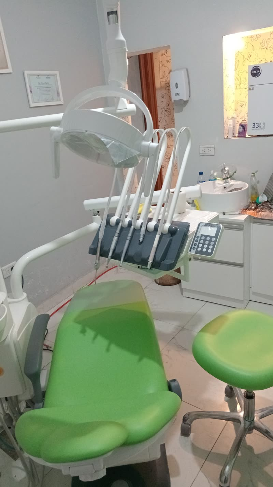
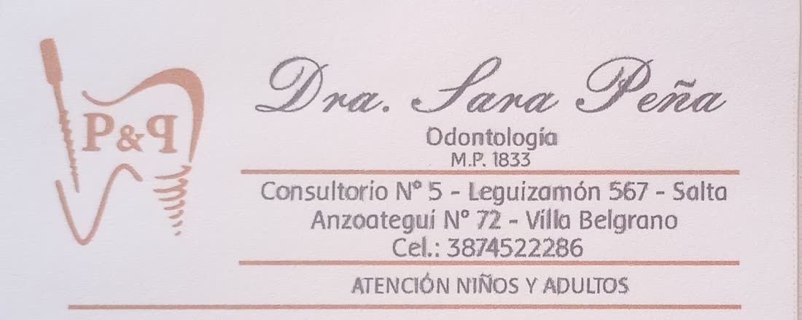

Dra. Sara Peña
Odontología · M.P. 1833
Atiende niños y adultos.
Odontología · Salta
Consultorio de la Dra. Sara Peña y el Dr. Gustavo Pérez en Villa Belgrano, Salta.

El consultorio
Así es el consultorio donde se atiende: sillón verde, lámpara de trabajo, instrumental ordenado y un equipo de esterilización en la misma sala.
Quiénes atienden
Odontología · M.P. 1833
Atiende niños y adultos.
Odontología
Su formación y especialidades las cargamos con sus datos.

Nombres, matrícula y direcciones de la tarjeta del consultorio y de su ficha de Google. Formación y tratamientos: los completamos con tu información.
Los pasos de muestra se ajustan a como dan turnos ustedes.
Escribinos por WhatsApp y coordinamos tu consulta. Atendemos niños y adultos.
Escribir por WhatsAppWhatsApp y teléfono: 387 452-2286
Botón de muestra: en la web real abre tu WhatsApp para pedir turno.